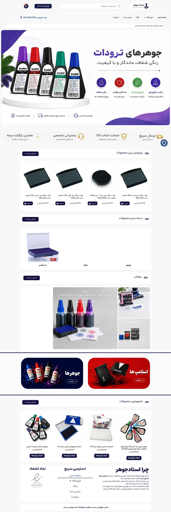
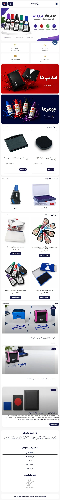

WordPress
ساخت و مدیریت وبسایتهای وردپرسی
طراحی وبسایت · مدیریت فروشگاه اینترنتی
من محدثه توکلی هستم؛ طراح وبسایت و مدیر فروشگاه اینترنتی با تمرکز بر WordPress، Elementor و WooCommerce. به طراحی تجربه کاربری مناسب، ساختار منظم صفحات و مدیریت حرفهای فروشگاههای اینترنتی علاقهمندم.


ترکیبی از نگاه کاربرمحور، اجرای فنی و توجه به جزئیات روزمره یک وبسایت.
فروشگاه اینترنتی استادجوهر را از صفر تا انتشار خودم طراحی و پیادهسازی کردهام.
چهار وبسایت دیگرِ ثبتشده در نسخه فعلی پورتفولیو، نمونهطراحیهای شخصی من هستند که طراحی و پیادهسازی آنها را مستقل انجام دادهام؛ این موارد را بهعنوان پروژه کارفرمایی یا سایت فعال مشتری معرفی نمیکنم.
در کنار طراحی، تجربه مدیریت سایتهای فعال استادجوهر و استادمهر را دارم؛ از جمله بارگذاری محصولات، مدیریت دستهبندیها و بهروزرسانی محتوای فروشگاه. استادمهر با سایتساز ساخته شده و نقش من در آن مدیریت سایت است، نه طراحی و توسعه.
از ساختار صفحات تا مدیریت روزانه فروشگاه؛ با تمرکز بر کارکرد واقعی سایت.
ساخت و مدیریت وبسایتهای وردپرسی
طراحی و چیدمان صفحات با المنتور
ساختار فروشگاه و مسیر خرید
چیدمان منظم و تجربه کاربری مناسب
نمایش درست در موبایل، تبلت و دسکتاپ
بارگذاری، سازماندهی و دستهبندی محصولات
بهروزرسانی صفحات و محتوای وبسایت
رسیدگی به بهروزرسانیها و مشکلات متداول
ابزارهایی که در کار طراحی، مدیریت و نگهداری سایت با آنها آشنایی دارم.
پروژه واقعی، نمونهطراحی شخصی و تجربه مدیریت سایت را جدا از هم ببینید.
استادجوهر؛ فروشگاه اینترنتیای که طراحی، پیادهسازی و راهاندازی آن را مستقل انجام دادهام.
طراحی، پیادهسازی، راهاندازی و مدیریت فروشگاه اینترنتی استادجوهر با ساختار دستهبندی محصولات و صفحات فروشگاهی.
چهار نمونهطراحی شخصی که در پورتفولیوی فعلی با نام و تصویر مشخص ثبت شدهاند؛ نه پروژه کارفرمایی و نه سایت فعال مشتری.
فروشگاه دورههای آنلاین روانشناسی و رشد فردی با معرفی مدرس، صفحه دوره و سبد خرید.
فروشگاه روسری با دستهبندی بر اساس موقعیت، پرفروشها و راهنمای انتخاب روسری.
فروشگاه محصولات آرایشی و مراقبت پوست با دستهبندی برندها و مجله زیبایی.
فروشگاه جواهر و زیورآلات با دستهبندی محصولات، پرفروشها و داستان برند.
استادمهر یک سایت واقعی است که با سایتساز ساخته شده؛ نقش من مدیریت سایت و محصولات است، نه طراحی و توسعه آن.
سایت واقعی فروشگاه استادمهر؛ مسئولیت من بارگذاری و مدیریت محصولات، دستهبندیها و بهروزرسانی محتوای فروشگاه است.
یادداشت شفافیت: در نسخه فعلی سایت مرجع، چهار نمونهطراحی شخصی با نام و توضیحات مشخص وجود دارد. برای معرفی نمونه پنجم، اطلاعات و تصویر تأییدشدهای در منبع پیدا نشد؛ بنابراین موردی بهصورت حدسی اضافه نشده است.
طراحی و چیدمان صفحات با تمرکز بر ظاهر حرفهای و تجربه کاربری.
ایجاد ساختار فروشگاه، دستهبندی محصولات و مسیر خرید با ووکامرس.
بهینهسازی نمایش سایت در موبایل، تبلت و دسکتاپ.
بارگذاری محصولات، مدیریت دستهبندیها و بهروزرسانی محتوا.
رسیدگی به بهروزرسانیها و مشکلات متداول سایت.
طراحی و پیادهسازی استادجوهر و نمونهکارهای شخصی؛ مدیریت محصولات و محتوای سایتهای استادجوهر و استادمهر.
پاسخگویی به کاربران و پیگیری درخواستهای مشتریان در کانالهای ارتباطی.
مدرسه عالی شهید مطهری، تهران
یک مسیر روشن و قابل پیگیری از شناخت نیاز تا تحویل.
گفتوگو درباره هدف، امکانات موردنیاز و محدوده پروژه.
طراحی صفحات، اجرای بخشهای توافقشده و بررسی نسخه موبایل.
بازبینی نهایی، تحویل و هماهنگی پشتیبانی در صورت توافق.
خیر؛ استادجوهر پروژه واقعی و فعال است. چهار مورد دیگر در گروه نمونهطراحی شخصی قرار دارند و نباید بهعنوان پروژه کارفرمایی معرفی شوند. استادمهر نیز سایت واقعی است که نقش من در آن مدیریت سایت و محصولات است.
بله. تجربه عملی طراحی و پیادهسازی فروشگاه اینترنتی استادجوهر با WordPress و WooCommerce را دارم و میتوانم برای راهاندازی فروشگاه و ساختار صفحات آن همکاری کنم.
بله. بارگذاری و سازماندهی محصولات، مدیریت دستهبندیها و بهروزرسانی محتوای فروشگاه از تجربههای عملی من در مدیریت استادجوهر و استادمهر است.
بله. امکان همکاری پروژهای و دورکاری وجود دارد.
WordPress، Elementor و Elementor Pro و WooCommerce ابزارهای اصلی کار من هستند. همچنین با Yoast SEO، Google Search Console، Google Analytics، WP Rocket، Wordfence، cPanel، WoodMart و Hello Elementor آشنا هستم. از Claude، ChatGPT، Gemini و Lovable نیز بهعنوان ابزارهای کمکی استفاده میکنم.
اگر برای طراحی وبسایت، مدیریت فروشگاه اینترنتی یا پشتیبانی وبسایت به همکاری نیاز دارید، خوشحال میشوم گفتوگو کنیم.
شروع گفتوگو در تلگرام ↗